⚙️ Lesson 29: Hard Surface Modeling
Master the art of creating mechanical objects, vehicles, weapons, and architectural elements. Learn precision modeling techniques, clean topology workflows, and the tools that make hard surface modeling efficient and professional.
🎯 What You'll Learn
- Hard surface fundamentals: What makes hard surface modeling distinct from organic modeling
- Essential modifiers: Bevel, Array, Mirror, Solidify for hard surface work
- Boolean operations: Combining, cutting, and intersecting meshes
- Edge flow and topology: Creating clean, subdivision-ready meshes
- Precision techniques: Snapping, alignment, and measurement tools
- Workflow optimization: Non-destructive modeling with modifier stacks
- Project: Create a mechanical object showcasing hard surface techniques
⏱️ Estimated time: 90-120 minutes
🎨 Project: Build a detailed mechanical prop using hard surface techniques
In This Lesson
⚙️ What Is Hard Surface Modeling?
Hard surface modeling is the art of creating objects with manufactured, geometric forms—vehicles, weapons, machinery, architecture, and technology. Unlike organic modeling (characters, creatures, nature), hard surface modeling emphasizes precision, clean edges, flat surfaces, and mechanical construction.
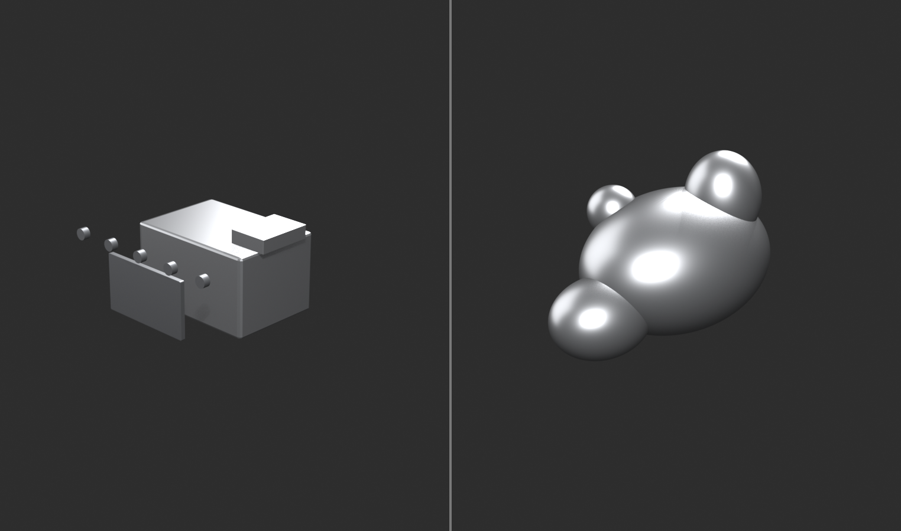
Defining Hard Surface
🔧 The Manufactured World
Hard surface objects are characterized by:
- Sharp edges and corners: Manufactured precision, not natural curves
- Flat surfaces: Planes, panels, geometric forms
- Mechanical construction: Parts, assemblies, functional design
- Symmetry and patterns: Engineered repetition
- Clean topology: Quads, edge loops, subdivision-ready
- Precise measurements: Dimensions matter
Common hard surface objects:
- Vehicles: Cars, spaceships, aircraft, tanks
- Weapons: Guns, swords, futuristic arms
- Architecture: Buildings, structures, interiors
- Machinery: Robots, mechanical devices, tools
- Technology: Computers, phones, gadgets
- Props: Furniture, containers, industrial objects
Why "hard surface"?
- Surfaces are rigid, not soft and deformable
- Materials are hard (metal, plastic, glass, concrete)
- Contrasts with "soft body" organic modeling
- Industry term for manufactured/mechanical modeling
The Hard Surface Aesthetic
🎨 Visual Characteristics
What makes hard surface look "hard surface":
- Beveled edges: Real objects don't have razor-sharp edges
- Bevel modifier creates realistic edge wear
- Catches light, adds visual interest
- Critical for professional look
- Panel separation: Objects made of multiple parts
- Panel lines, seams, gaps between components
- Shows construction and assembly
- Adds detail and realism
- Surface detail: Functional elements
- Screws, bolts, vents, grills
- Access panels, hatches
- Labels, warnings, markings
- Geometric precision: Intentional shapes
- Circles are perfect circles
- Parallel lines stay parallel
- Symmetry is exact
Level of detail hierarchy:
- Primary forms: Overall shape and silhouette
- Secondary forms: Major panels and components
- Tertiary details: Bolts, vents, surface features
- Micro details: Surface scratches, wear (often in textures)
Hard Surface Mindset
🧠 Thinking Like an Engineer
Different mental approach from organic modeling:
- Function drives form: Objects have purpose
- Why does this part exist?
- How would it be manufactured?
- What does it do?
- Assembly thinking: Objects are made of parts
- Model individual components
- Combine into final object
- Think about construction process
- Geometric precision: Math and measurement
- Exact dimensions matter
- Angles are intentional
- Symmetry is expected
- Clean topology: Technical correctness
- Quads wherever possible
- Good edge flow
- Subdivision-ready
Reference is crucial:
- Study real mechanical objects
- Understand how things are built
- Notice details (panel lines, fasteners, vents)
- Reference photos from multiple angles
- Technical drawings when available
The believability question:
- "Could this actually be built?"
- "Do the parts make sense together?"
- "Is the construction logical?"
- Even sci-fi/fantasy needs internal logic
💡 The Engineering Aesthetic: Hard surface modeling is where 3D art meets engineering. You're not just creating something that looks good—you're creating something that looks functional. Every edge, every panel, every detail should suggest purpose. Even if your spaceship never actually flies, it should look like it could fly. The bolts should be where bolts would need to be. The panels should separate where panels would need to separate. This attention to functional believability is what separates amateur hard surface work from professional. You're not just an artist. You're a digital engineer.
⚖️ Hard Surface vs. Organic Modeling
Understanding the fundamental differences between hard surface and organic modeling helps you choose the right approach and techniques for each type of object. While both create 3D forms, the methods, tools, and mindsets are distinct.
Core Differences
📊 Comparison Overview
| Aspect | Hard Surface | Organic |
|---|---|---|
| Shapes | Geometric, angular, precise | Curved, flowing, natural |
| Edges | Sharp, beveled, hard transitions | Smooth, rounded, soft transitions |
| Surfaces | Flat planes, panels | Curved, undulating |
| Primary Tool | Edit Mode + Modifiers | Sculpt Mode |
| Topology | Clean quads from start | Messy, retopologized later |
| Precision | Exact measurements critical | Proportions more important than exact size |
| Symmetry | Expected, enforced | Natural asymmetry common |
| Workflow | Non-destructive, modifier-based | Iterative, sculptural |
| Detail Method | Boolean cuts, panel lines | Brush strokes, resolution |
Technique Comparison
🛠️ How You Work
Hard surface techniques:
- Box modeling: Start with primitives, extrude and refine
- Cube → extrude → bevel → subdivide
- Controlled, predictable
- Clean topology maintained
- Modifier stacking: Non-destructive workflow
- Mirror → Array → Bevel → Subdivision Surface
- Can adjust at any stage
- Parametric control
- Boolean operations: Combine meshes
- Union, Difference, Intersect
- Cut panels and details
- Speed up complex cuts
- Precision tools: Exact placement
- Snapping, alignment
- Numeric input
- Measurement
Organic techniques:
- Sculpting: Freeform surface manipulation
- Brushes push/pull geometry
- Intuitive, artistic
- High resolution meshes
- Dynamic topology: Add geometry as needed
- Focus on forms, not topology
- Detail where needed
- Messy but flexible
- Retopology: Clean mesh afterward
- High-res sculpt → low-poly mesh
- Bake details to textures
- Production-ready result
When to Use Each Approach
🎯 Decision Framework
Choose hard surface modeling for:
- ✅ Vehicles, weapons, machinery
- ✅ Architecture and structures
- ✅ Technology and gadgets
- ✅ Furniture and props
- ✅ Anything with straight edges and flat surfaces
- ✅ Objects that need exact dimensions
- ✅ Mechanical components and assemblies
Choose organic modeling/sculpting for:
- ✅ Characters and creatures
- ✅ Natural objects (rocks, trees, terrain)
- ✅ Cloth and soft materials
- ✅ Anything with irregular, natural forms
- ✅ Surface detail and texture
- ✅ Concept exploration and design
Hybrid approach (use both):
- ✅ Robots (hard surface body, organic-looking movement)
- ✅ Armored characters (hard surface armor, organic body)
- ✅ Vehicles with wear (hard surface model, sculpted damage)
- ✅ Architectural details (hard surface structure, sculpted ornament)
- ✅ Weapons with organic elements
Combining Hard Surface and Organic
🔄 Best of Both Worlds
Professional workflow often combines approaches:
- Start with hard surface base:
- Model mechanical parts precisely
- Use modifiers for clean topology
- Get proportions and forms correct
- Add sculpted details:
- Damage, dents, wear
- Organic deterioration
- Surface imperfections
- Bake to low-poly:
- Clean hard surface base mesh
- Sculpted details in normal map
- Best of both worlds
Example: Sci-fi armor piece
- Hard surface modeling: Plate shapes, panel lines, mechanical connections
- Sculpting: Battle damage, wear patterns, surface scratches
- Result: Precise mechanical design with realistic weathering
The key insight:
- Don't think "hard surface OR organic"
- Think "hard surface AND organic"
- Use each method where it excels
- Combine for professional results
💡 The Right Tool for the Right Surface: Trying to sculpt a spaceship is frustrating. Trying to polygon-model a face is tedious. But sculpting battle damage on a spaceship? Perfect. Polygon-modeling the helmet that face wears? Ideal. Professional 3D artists aren't loyal to one method—they're fluent in multiple methods and choose based on what they're creating. Hard surface modeling is one tool in your toolkit. A powerful, essential tool. But still just one tool. Master it. Then master when to use it versus when to sculpt. That flexibility is what makes you professional.
🔧 Essential Hard Surface Modifiers
Modifiers are the backbone of professional hard surface modeling. They allow non-destructive workflows where you can adjust parameters at any time without losing your work. Master these four essential modifiers and you'll have the foundation for 90% of hard surface projects.
The Modifier Stack Workflow
📚 Non-Destructive Power
What is a modifier stack?
- Modifiers apply operations to mesh without changing base geometry
- Stack multiple modifiers in sequence
- Each modifier processes result of previous modifier
- Can reorder, adjust, disable, or delete at any time
- Only "apply" when completely finished
Why modifiers are crucial for hard surface:
- Preserve base mesh (can always go back)
- Iterate quickly (adjust parameters instantly)
- Combine effects (Mirror + Array + Bevel, etc.)
- Maintain clean, low-poly base
- Professional, flexible workflow
Typical hard surface modifier stack:
- Mirror - Create symmetry
- Array - Duplicate elements
- Bevel - Smooth edges
- Subdivision Surface - Add smooth resolution
This order matters! Each modifier affects the next.
Bevel Modifier
✨ The Professional Edge
What Bevel modifier does:
- Rounds sharp edges automatically
- Adds geometry along edges
- Creates realistic edge wear
- Catches light beautifully
- Makes models look professional instantly
Why edges need beveling:
- Real objects never have perfectly sharp edges
- Manufacturing processes leave small bevels
- Wear and tear rounds edges over time
- Light needs surfaces to catch on
- Unbeveled = amateurish, CG-looking
- Beveled = professional, realistic
Adding Bevel modifier:
- Select object
- Modifier Properties panel (wrench icon)
- Add Modifier → Generate → Bevel
- Modifier appears in stack
Key Bevel settings:
- Amount: How large the bevel is
- 0.01-0.05 for small, tight bevels
- 0.1-0.3 for medium bevels
- Larger for stylized or chunky models
- Segments: Smoothness of bevel
- 2-3 segments = slight bevel (most common)
- 4-6 segments = rounded bevel
- More segments = smoother but heavier
- Limit Method: Which edges to bevel
- None: All edges
- Angle: Only edges above angle threshold (common)
- Weight: Only edges with bevel weight (precise control)
- Angle: When using Angle limit
- 30° = bevels most edges (aggressive)
- 45-60° = bevels sharp edges only
- Adjust based on model
Bevel workflow tips:
- Add Bevel modifier late in stack (after Mirror, Array)
- Use Angle method for automatic beveling
- Use Weight method for precise control (mark edges in Edit Mode)
- Keep bevels subtle for realism
- Clamp Overlap to prevent artifacts
Marking edges for Bevel Weight:
- Edit Mode, Edge Select mode
- Select edges to bevel
- Press
Ctrl+E→ Bevel Weight - Increase weight to 1.0 (edges turn cyan)
- Bevel modifier with Weight limit affects only these edges
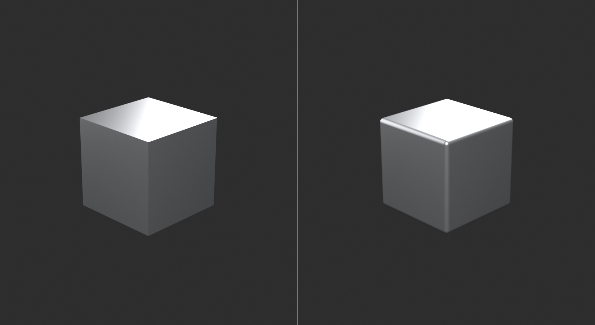
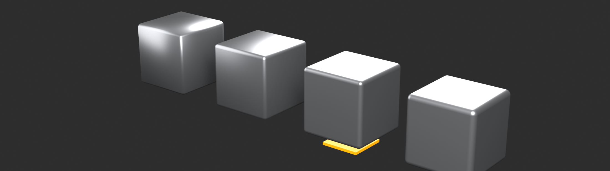
Mirror Modifier
🪞 Perfect Symmetry
What Mirror modifier does:
- Creates mirrored copy of mesh across axis
- Model one side, get both sides automatically
- Updates in real-time as you edit
- Can merge at center seam
- Essential for symmetrical objects
When to use Mirror:
- Vehicles (cars, spaceships, aircraft)
- Weapons (guns, swords)
- Characters (armor, robots)
- Architecture (symmetrical buildings)
- Any object with left/right symmetry
Setting up Mirror modifier:
- Delete one half of mesh (e.g., X > 0 side)
- Ensure object origin is centered (Object → Set Origin → Origin to Geometry)
- Add Modifier → Generate → Mirror
- Select axis (usually X for left/right)
- Enable "Clipping" (important!)
Key Mirror settings:
- Axis: X, Y, or Z (direction to mirror)
- X = left/right (most common)
- Y = front/back
- Z = top/bottom
- Can enable multiple axes
- Clipping: Must enable!
- Merges vertices at mirror plane
- Prevents gaps at center seam
- Allows modeling across centerline
- Merge: Distance for vertex merging
- Controls clipping tolerance
- Usually default is fine
- Bisect: Cuts mesh at mirror plane
- Use if mesh crosses centerline
- Cleans up geometry automatically
Mirror modifier workflow:
- Add Mirror modifier first (before most others)
- Model only one side in Edit Mode
- Mirror updates automatically
- Work near centerline with Clipping enabled
- Apply modifier only when completely finished
Common Mirror issues:
- Gap at center: Enable Clipping
- Wrong axis mirrored: Change Axis setting
- Mirror in wrong location: Center object origin
- Vertices not merging: Select verts,
M→ By Distance
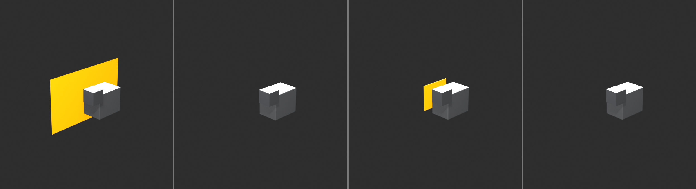
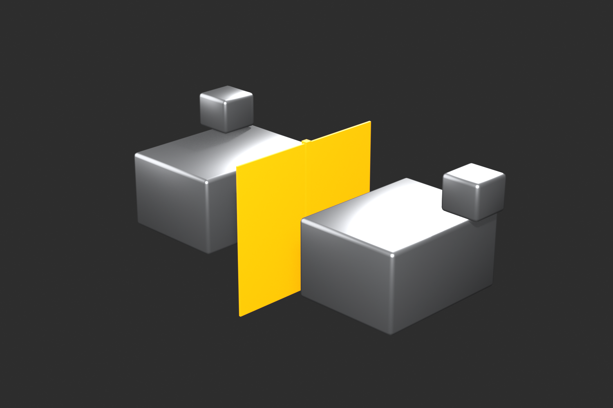
Array Modifier
📋 Smart Duplication
What Array modifier does:
- Creates multiple copies in a line
- Adjustable count and spacing
- Can follow curve or object path
- Perfect for repetitive elements
- Changes update all copies instantly
When to use Array:
- Repeated patterns (bolts, vents, panels)
- Structural elements (beams, columns, railings)
- Mechanical parts (gears, treads)
- Windows in buildings
- Armor plates or scales
Setting up Array modifier:
- Model single element
- Add Modifier → Generate → Array
- Adjust Count (number of copies)
- Adjust offset (spacing between copies)
Key Array settings:
- Count: Number of duplicates
- Includes original
- Count of 3 = 3 total objects
- Relative Offset: Spacing based on object size
- X: 1.0 = one object-width apart (no gap)
- X: 1.2 = slight gap between copies
- Most common offset method
- Constant Offset: Fixed distance
- Exact units (e.g., 0.5m)
- Precise spacing control
- Object Offset: Follow another object
- Array follows Empty's position
- Advanced: curves and paths
Array + Mirror combination:
- Create array of bolts on one side
- Mirror modifier mirrors entire array
- Both sides get bolt pattern automatically
- Powerful for symmetrical repeated elements
Array workflow tips:
- Model single perfect element first
- Add Array modifier, adjust count
- Fine-tune spacing with offsets
- Can use multiple Array modifiers (grid patterns)
- Apply last (after all adjustments)
Advanced Array techniques:
- Circular arrays: Array + Object Offset on rotated Empty
- Curved arrays: Array + Curve modifier
- 2D grids: Two Array modifiers (X and Y)
- Random variation: Array copies can be edited after applying
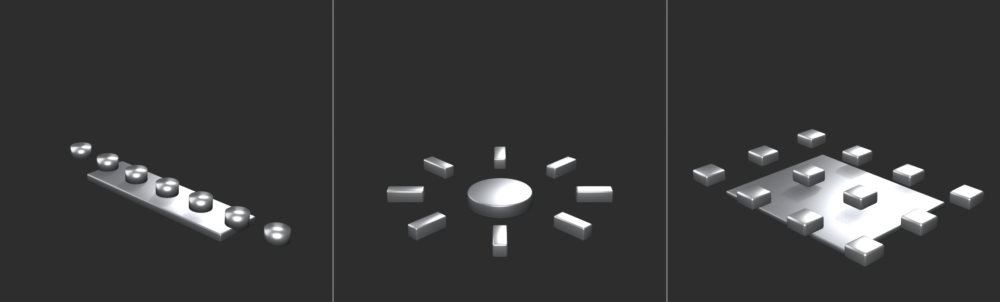
Solidify Modifier
📦 Adding Thickness
What Solidify modifier does:
- Adds thickness to surfaces
- Converts flat planes into solid shells
- Creates realistic panels and plates
- Essential for hard surface work
When to use Solidify:
- Armor plates and panels
- Vehicle body panels
- Sheet metal objects
- Any surface that needs thickness
- Faster than manual thickness modeling
Setting up Solidify:
- Model as flat surface (single-sided)
- Add Modifier → Generate → Solidify
- Adjust Thickness value
- Instant shell/plate
Key Solidify settings:
- Thickness: How thick the shell
- Positive = extrude outward from normals
- Negative = extrude inward
- Typical: 0.02 - 0.1 for panels
- Offset: Direction of extrusion
- -1.0 = fully inward
- 0.0 = centered (both directions)
- 1.0 = fully outward
- Even Thickness: Maintain uniform thickness
- Enable for consistent results
- Prevents thin spots at angles
- Rim: Fill edges
- Creates closed volume
- Important for 3D printing
Solidify workflow tips:
- Model surface topology first (as if flat)
- Add Solidify for instant thickness
- Adjust offset to control direction
- Combine with Bevel for rounded edges
- Great for panel-based designs
Solidify + Bevel combination:
- Flat panel geometry
- Solidify modifier (adds thickness)
- Bevel modifier (rounds new edges)
- Result: Realistic panel with rounded edges
Subdivision Surface Modifier
✨ Smooth Subdivision
What Subdivision Surface does:
- Smooths and subdivides mesh
- Creates organic curves from blocky geometry
- Maintains sharp edges where needed
- Standard for smooth hard surface results
When to use Subdivision Surface:
- Almost all hard surface models
- Creates smooth curves
- Film-quality smooth surfaces
- Keep low-poly base, high-poly render
Setting up Subdivision Surface:
- Model with clean quad topology
- Add Modifier → Generate → Subdivision Surface
- Model smooths automatically
- Adjust levels as needed
Key Subdivision settings:
- Levels Viewport: Subdivision in editor
- 1-2 for modeling (performance)
- Shows smooth preview
- Render: Subdivision for final render
- 2-3 for most models
- Higher for close-ups
- Optimal Display: Hide subdivided edges
- Cleaner viewport
- Shows control cage only
Controlling edge sharpness:
- Edge Crease: Prevent smoothing
- Edit Mode: Select edge
Shift+E→ drag to add crease- Value 1.0 = completely sharp
- Value 0.0 = fully smooth
- Support loops: Add geometry near edges
- Edge close to edge = sharp result
- Traditional method (more geometry)
Subdivision Surface tips:
- Add as final modifier (after Bevel)
- Keep viewport level low for performance
- Use edge creases for hard edges
- Requires clean quad topology to work well
- Triangles and ngons cause artifacts
⚙️ The Modifier Stack Recipe
Standard hard surface modifier order:
- Mirror - Create symmetry first
- Array - Duplicate elements
- Solidify - Add thickness to surfaces
- Boolean - Cut panels (covered next section)
- Bevel - Smooth edges
- Subdivision Surface - Final smoothing
This order ensures each modifier has the correct input and produces clean results.
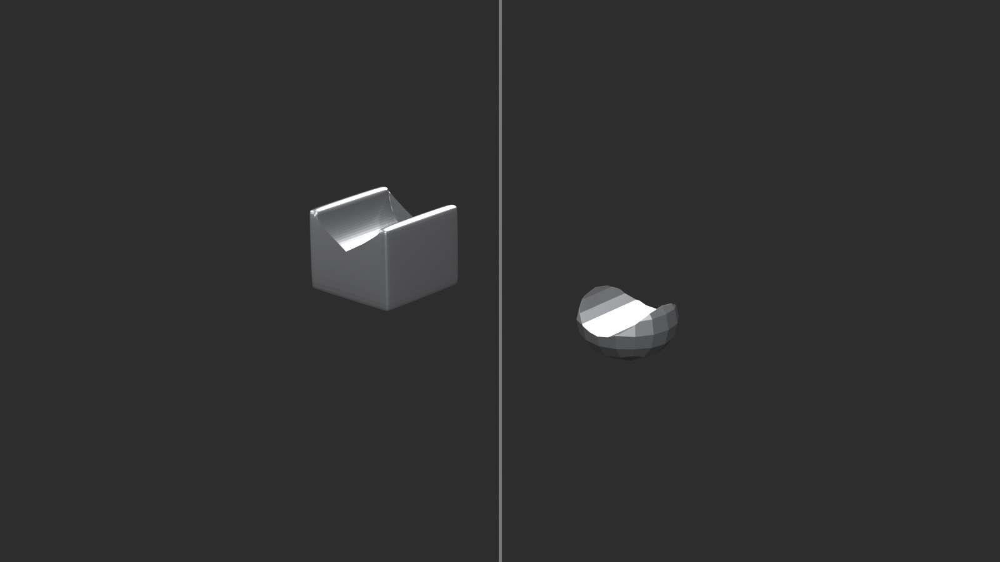
💡 The Non-Destructive Advantage: Imagine modeling a spaceship. You spend hours perfecting the geometry. Then client says "make it twice as wide." With traditional modeling, you'd manually stretch everything, fix distortions, remodel damaged areas. With modifiers? Adjust one Mirror axis value. Done in seconds. That's the power of non-destructive workflow. Your base mesh stays clean and simple. Modifiers do the heavy lifting. You can change your mind anytime. Iterate rapidly. Try different variations. This isn't just convenience—it's professional workflow. Master modifiers. They're your competitive advantage.
✂️ Boolean Operations
Boolean operations allow you to combine, subtract, and intersect meshes to create complex forms quickly. In hard surface modeling, Booleans are essential for cutting panels, creating openings, and building mechanical assemblies. Master Booleans and you'll speed up your workflow dramatically.
Understanding Boolean Operations
🔀 Combining Meshes Mathematically
What are Booleans?
- Mathematical operations on mesh volumes
- Combine two meshes in various ways
- Named after Boolean algebra (George Boole)
- Three main operations: Union, Difference, Intersect
- Fast way to create complex cuts and combinations
The three Boolean operations:
- Union (Join): Combine two meshes into one
- A + B = Combined volume
- Removes internal faces
- Creates single unified object
- Difference (Subtract): Cut one mesh from another
- A - B = A with B-shaped hole
- Most common operation in hard surface
- Creates panels, vents, openings
- Intersect: Keep only overlapping volume
- A ∩ B = Only where both overlap
- Less common but useful
- Creates interesting shapes
Boolean workflow concept:
- Base object: The mesh you're modifying
- Cutter object: The shape you're using to cut/combine
- Boolean modifier: Applied to base, references cutter
- Result: Base mesh modified by cutter shape
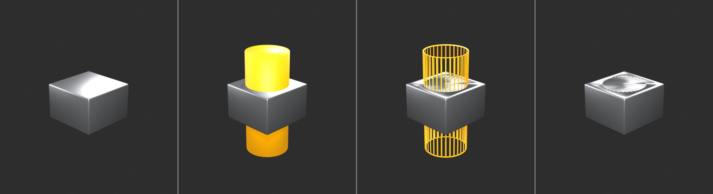
Setting Up Boolean Operations
⚙️ Basic Boolean Setup
Method 1: Boolean Modifier (Non-destructive)
- Create base object (e.g., cube for panel)
- Create cutter object (e.g., smaller cube for hole)
- Position cutter where you want cut
- Select base object
- Add Modifier → Generate → Boolean
- Set Operation (Union/Difference/Intersect)
- Set Object to cutter object
- Result updates in real-time
Method 2: Direct Boolean (Destructive)
- Position cutter intersecting base
- Select cutter, then base (order matters!)
- Object menu → Boolean → Union/Difference/Intersect
- Operation applied immediately
- Cutter deleted automatically
- Result is final (can't adjust)
Which method to use:
- Boolean Modifier: During modeling (iterative, adjustable)
- Direct Boolean: When done (finalize, clean up)
- Start with modifier, apply when satisfied
Boolean modifier settings:
- Operation: Difference/Union/Intersect
- Object: The cutter mesh
- Solver: Fast or Exact
- Fast = quicker, can have errors
- Exact = slower, more reliable (use this)
- Overlap Threshold: Tolerance for coplanar faces
- Increase if seeing artifacts
- Usually default is fine
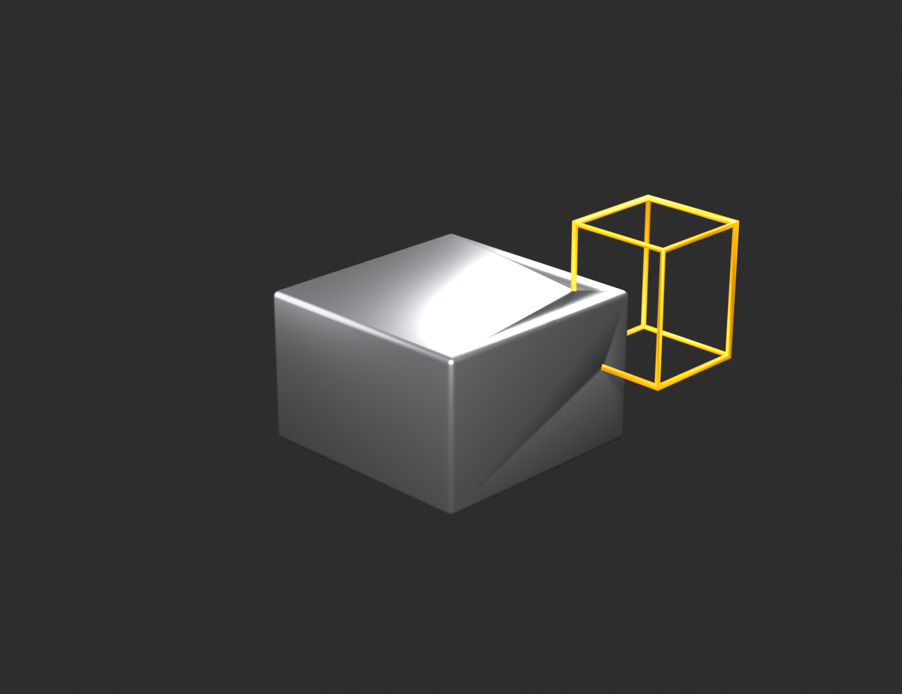
Common Boolean Use Cases
🎯 Practical Applications
Panel lines and separation:
- Create thin cube as cutter
- Position where panel line should be
- Boolean Difference creates indent/gap
- Result: Clean panel separation
- Essential for vehicle panels
Vents and grills:
- Array of cubes/cylinders as cutters
- Boolean Difference cuts multiple holes
- Can use single cutter with multiple booleans
- Or apply boolean, duplicate cutter, repeat
- Fast way to create vent patterns
Windows and openings:
- Cube positioned in wall
- Boolean Difference cuts window opening
- Add frame geometry separately
- Perfect for architecture
Complex mechanical cuts:
- Cylinder cuts circular hole
- Cube cuts rectangular slot
- Sphere cuts rounded indent
- Any shape can be cutter
Chamfers and bevels:
- 45° rotated cube cuts chamfer
- Cylinder cuts rounded edge
- Alternative to Bevel modifier for specific edges
Boolean combining (Union):
- Merge separate parts into one object
- Useful for complex assemblies
- Removes internal faces automatically
- Cleaner than Join (Ctrl+J)
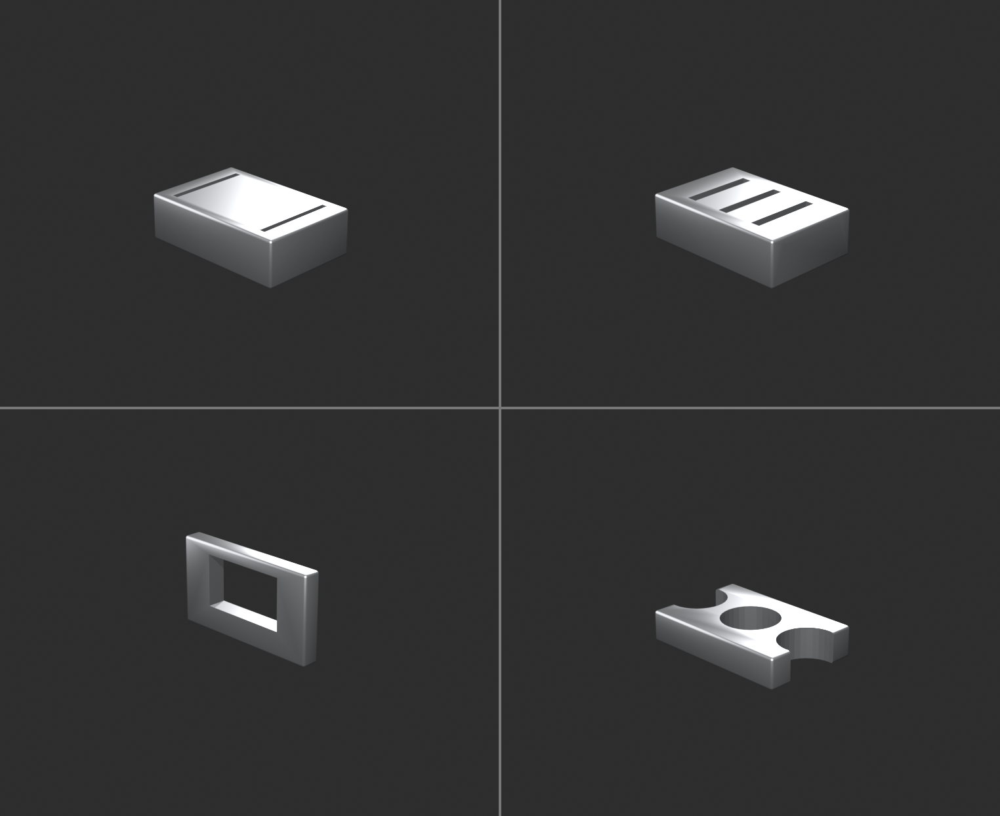
Boolean Best Practices
✨ Professional Techniques
Keep cutters organized:
- Put all cutters in separate collection
- Name cutters descriptively (e.g., "Cutter_Panel_01")
- Hide cutter collection in viewport
- Disable cutter rendering
- Keeps workspace clean
Cutter placement tips:
- Cutter should fully penetrate base mesh
- Extend beyond surface on both sides
- Prevents thin faces and artifacts
- If cutter barely touches, can cause errors
Use simple cutter geometry:
- Low-poly cutters work best
- Cube, cylinder, sphere = reliable
- Complex cutters = more errors
- Subdivided cutters = slower
Apply scale and rotation:
- Both base and cutter should have scale = 1.0
- Select object → Ctrl+A → All Transforms
- Prevents Boolean errors
- Critical for reliable results
Clean topology before Boolean:
- Remove doubles/merge vertices
- Recalculate normals
- Delete loose geometry
- Clean mesh = clean Boolean
Use Exact solver:
- Boolean modifier → Solver: Exact
- More reliable than Fast
- Handles complex cases better
- Slight performance cost worth it
Boolean modifier stack position:
- Usually after Mirror/Array
- Before Bevel/Subdivision
- Let Mirror duplicate Boolean operation
- Let Bevel smooth Boolean edges
Common Boolean Problems and Solutions
⚠️ Troubleshooting Booleans
Problem: Boolean creates weird artifacts or holes
- Cause: Overlapping faces, bad normals, non-manifold geometry
- Solution:
- Recalculate normals (Alt+N → Recalculate Outside)
- Remove doubles (Edit Mode → Mesh → Clean Up → Merge by Distance)
- Check for non-manifold (Select → Select All by Trait → Non-Manifold)
- Use Exact solver instead of Fast
Problem: Boolean has no effect or disappears
- Cause: Cutter not intersecting base, or cutter hidden
- Solution:
- Check cutter is actually penetrating base mesh
- Unhide cutter object (Alt+H)
- Verify Boolean modifier points to correct cutter object
Problem: Boolean creates shading artifacts
- Cause: Smooth shading on sharp edges
- Solution:
- Apply Boolean modifier
- Select sharp edges
- Mark Sharp (Ctrl+E → Mark Sharp)
- Or use Auto Smooth (Object Data Properties → Normals → Auto Smooth)
Problem: Boolean creates messy topology
- Cause: Booleans create triangulated geometry
- Solution:
- This is normal Boolean behavior
- Apply modifier, then manually clean topology if needed
- Or use Boolean just for cutting, rebuild edge flow manually
- For animation, may need retopology
Problem: Boolean is very slow
- Cause: High-poly cutter or base mesh
- Solution:
- Use simple, low-poly cutter geometry
- Apply Subdivision after Boolean, not before
- Temporarily disable viewport subdivision
Problem: Cutter appears in render
- Cause: Cutter render visibility enabled
- Solution:
- Outliner: Click camera icon next to cutter (disable render)
- Or put cutters in collection, disable collection render
- Cutters should never render
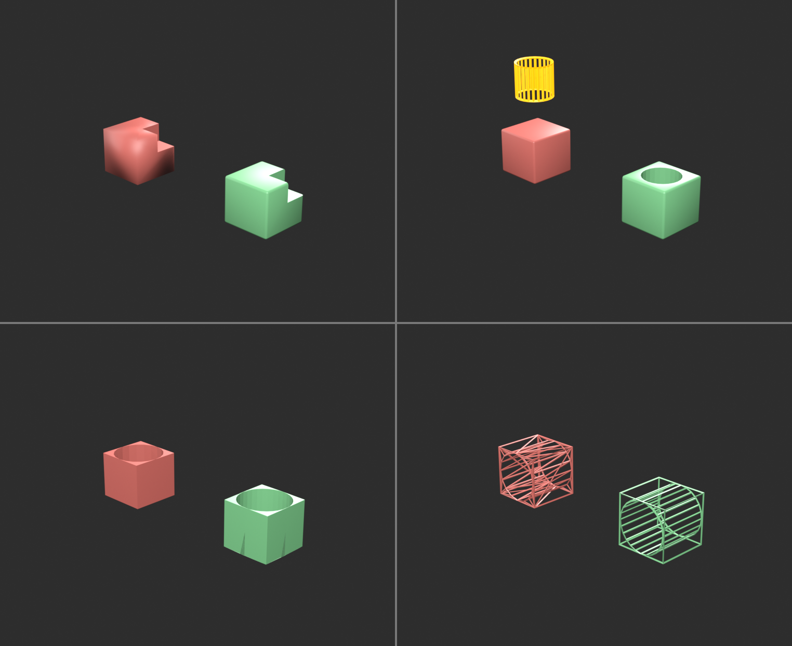
Advanced Boolean Techniques
🚀 Professional Workflows
Boolean chains (multiple operations):
- Base mesh with first Boolean modifier (Cutter A)
- Add second Boolean modifier (Cutter B)
- Add third Boolean modifier (Cutter C)
- Each cutter creates separate cut
- All non-destructive until applied
Boolean with Array cutters:
- Single cutter object with Array modifier
- Boolean references cutter (gets all arrayed copies)
- Adjust array count/spacing anytime
- Entire pattern updates automatically
- Perfect for vent grills, bolts, panels
Bevel after Boolean:
- Boolean cuts sharp edges
- Add Bevel modifier after Boolean
- Bevels all edges including Boolean cuts
- Professional, realistic result
- Standard hard surface workflow
Boolean for quick concepting:
- Block out forms with primitives
- Union/Difference to explore shapes
- Fast iteration, no clean topology needed
- Finalize geometry later if concept works
- Great for rapid prototyping
Symmetrical Booleans:
- Boolean modifier after Mirror modifier
- Cutter on one side gets mirrored
- Both sides cut automatically
- Efficient for symmetrical objects
When NOT to Use Booleans
🚫 Boolean Limitations
Avoid Booleans for:
- Animation-ready topology:
- Booleans create triangulated, messy geometry
- Not good for deformation
- Manual modeling or retopology better
- Game models (low-poly):
- Boolean adds unnecessary geometry
- Manual modeling more efficient
- Better control over polygon count
- Simple cuts:
- If edge loop + delete achieves same result
- Manual method cleaner
- Boolean overkill for basic operations
- When clean quads required:
- Booleans triangulate at cut boundaries
- Subdivision Surface may show artifacts
- Critical areas need manual topology
Boolean alternatives:
- Knife tool (K): Manual cutting, full control
- Inset (I): Panel separation without Boolean
- Loop Cut (Ctrl+R): Edge loops for subdivision
- These create cleaner topology but take more time
💡 Booleans Are Speed, Not Perfection: Booleans are powerful but messy. They let you cut complex shapes in seconds that would take minutes or hours manually. But the geometry they create isn't clean. It's triangulated, it has odd edge flow, it doesn't subdivide well. So when do you use Booleans? During exploration and concepting—when speed matters more than topology. For final detail passes—when the cuts will be visible but not deforming. For non-hero areas—background props where performance matters more than perfect topology. Then, when topology matters—character faces, animation, close-up details—you model manually. Clean geometry. Perfect edge loops. Proper flow. Both skills are essential. Know when to use each.
🔀 Edge Flow and Topology
Clean topology is the foundation of professional hard surface modeling. Good edge flow makes models easier to modify, subdivide smoothly, and look professional. Understanding topology principles separates amateur work from production-ready assets.
What Is Topology?
🕸️ The Mesh Structure
Topology defined:
- The arrangement and connection of vertices, edges, and faces
- How your mesh is structured, not just its shape
- The "flow" of edge loops through your model
- Critical for subdivision, animation, and modification
Good vs. bad topology:
- Good topology:
- Mostly quads (four-sided faces)
- Edge loops flow logically
- Even distribution of faces
- Subdivides smoothly
- Easy to modify
- Bad topology:
- Random triangles throughout
- Ngons (5+ sided faces)
- Chaotic edge flow
- Subdivision artifacts
- Difficult to work with
Why topology matters in hard surface:
- Subdivision Surface requires clean quads
- Modifiers work better with good topology
- Professional models need clean structure
- Easier to add detail later
- Client/employer expects it
The Quad Rule
▢ Four-Sided Faces
Why quads are essential:
- Subdivision Surface loves quads:
- Subdivides predictably and smoothly
- Creates uniform smooth surfaces
- No weird artifacts or pinching
- Easy to select and modify:
- Edge loops select cleanly
- Loop cuts work properly
- Predictable manipulation
- Industry standard:
- Game engines expect quads
- Film pipelines require quads
- Professional expectation
When triangles are acceptable:
- Final geometry (after all modifications)
- Flat surfaces that won't subdivide
- Hidden areas viewer won't see
- Game engines (triangulate on export)
- But during modeling: maintain quads
Ngons (5+ sided faces):
- Generally avoid:
- Subdivision creates artifacts
- Unpredictable results
- Can cause render issues
- Sometimes acceptable:
- Completely flat surfaces
- Areas that won't subdivide
- Temporary during modeling
- But convert to quads before finishing
Converting to quads:
- Knife tool (K): Cut faces to create quads
- Grid Fill: Fill hole with quad grid (Face → Grid Fill)
- Triangulate to Quads: Face → Tris to Quads (Alt+J)
- Manual: Delete faces, rebuild with quads
Edge Flow Principles
🌊 Following the Form
What is edge flow?
- The pattern and direction of edge loops
- How edges "flow" across your model
- Should follow the form and contours
- Good flow = easy modification and subdivision
Good edge flow characteristics:
- Follows contours: Edges run along forms
- Circular holes = circular edge loops
- Cylindrical forms = loops around cylinder
- Edge flow defines shape
- Continuous loops: Edge loops complete circuits
- Can select entire loop easily (Alt+Click)
- Loops don't terminate randomly
- Clean, organized structure
- Even distribution: Faces roughly same size
- No tiny faces next to huge faces
- Subdivision works evenly
- Professional appearance
- Logical structure: Flow makes sense
- Easy to understand and modify
- Other artists can work with it
- No chaotic spaghetti
Common edge flow patterns:
- Cylindrical: Loops around form, lines along length
- Spherical: Latitude and longitude lines
- Planar: Grid pattern on flat surfaces
- Radial: Loops radiating from point (fan pattern)
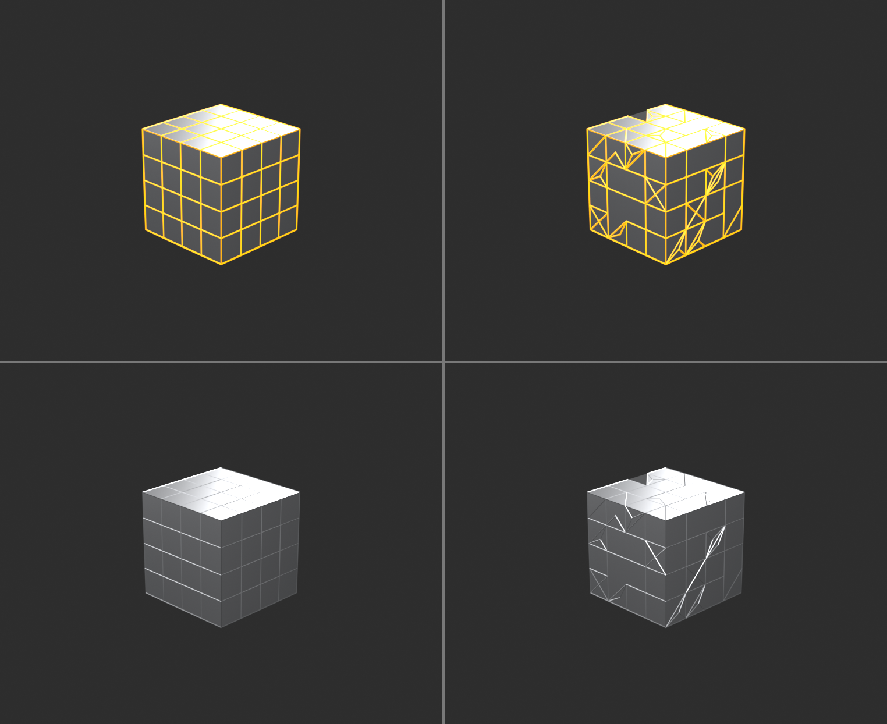
Topology Around Details
🎯 Managing Complex Areas
Holes and openings:
- Edge loops should follow hole perimeter
- Circular holes need circular edge loops
- Rectangular holes need rectangular loops
- Don't fight the shape—flow with it
Reducing edge loops (poles):
- Problem: Sometimes need fewer loops than you have
- Solution: Poles (vertices with 3 or 5 edges)
- 3-edge vertex = reduction pole (loop terminates)
- 5-edge vertex = addition pole (loop splits)
- Allows edge loop count to change
- Best practice:
- Hide poles in less important areas
- Keep poles away from deformation zones
- Subdivision handles poles acceptably if placed well
Corners and intersections:
- Where surfaces meet at angles
- Often require poles or triangles
- Focus on making clean transition
- Minimize pinching with supporting geometry
Panel separation:
- Edge loops define panel boundaries
- Inset creates clean panel separation
- Boolean cuts need topology cleanup afterward
- Plan edge flow around panel design
Supporting Geometry
🏗️ Controlling Subdivision
What are support loops?
- Extra edge loops near edges you want sharp
- Controls how Subdivision Surface smooths
- Closer loops = sharper edge after subdivision
- Fundamental hard surface technique
How support loops work:
- Subdivision Surface smooths by averaging
- Distant edges = lots of smoothing (round)
- Close edges = little smoothing (sharp)
- Add loops close to edges you want crisp
Creating support loops:
- Loop Cut tool (
Ctrl+R) - Position near edge you want sharp
- Typically 2 loops (one each side of edge)
- Closer = sharper, farther = softer
Support loop guidelines:
- Beveled edges: 1-2 loops on each side
- Sharp corners: 2+ loops, very close
- Smooth transitions: Fewer loops, farther apart
- Consistency: Similar edges = similar loop spacing
Alternative: Edge Crease
- Select edge in Edit Mode
Shift+E→ drag to add crease- Value 1.0 = completely sharp
- Subdivision respects crease
- No extra geometry needed
- But less control than support loops
When to use each method:
- Support loops: Production standard, full control
- Edge Crease: Quick test, concept work
- Bevel Modifier: Non-destructive, adjustable
- Often combine multiple methods
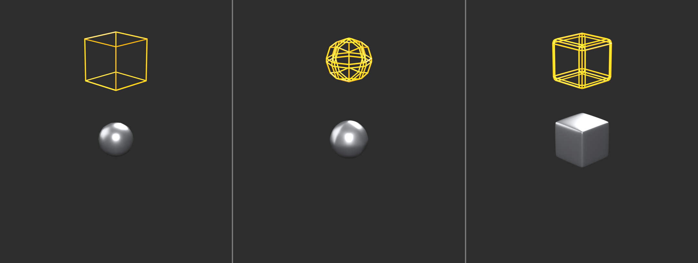
Topology Workflow Tips
✨ Professional Practices
Start with good topology:
- Plan edge flow before modeling
- Think about how model will subdivide
- Easier to maintain clean topology than fix later
- Block with quads from the start
Check topology regularly:
- Enable Subdivision preview frequently
- Look for artifacts, pinching, weird behavior
- Fix problems as they appear
- Don't wait until end
Use edge loop selection:
Alt+Clickselects entire edge loop- If loop won't select = broken flow
- Good topology = clean loop selections
- Test for proper structure
Visualize subdivision:
- Add Subdivision Surface modifier early
- Set viewport level to 1 or 2
- Model while seeing subdivided result
- Immediate feedback on topology quality
Face orientation check:
- Viewport Overlays → Face Orientation
- Blue = correct normals (outside)
- Red = flipped normals (inside)
- Fix: Select faces →
Alt+N→ Flip
Clean up tools:
- Merge by Distance: Mesh → Clean Up → Merge by Distance
- Removes duplicate vertices
- Fixes tiny gaps
- Delete Loose: Mesh → Clean Up → Delete Loose
- Removes floating vertices/edges
- Cleanup before export
- Recalculate Normals:
Alt+N→ Recalculate Outside- Fixes inside-out faces
- Run before finishing
💡 Topology Is Your Foundation: You can have perfect proportions, amazing details, professional textures—but if your topology is messy, your model is amateur. Topology is the foundation everything else builds on. Clean quads let you subdivide smoothly. Good edge flow lets you modify easily. Proper structure makes you professional. Beginners focus on shape. Intermediates focus on detail. Professionals focus on topology. Because topology determines whether your model is actually usable in production. Game engine? Needs clean topology. Animation? Needs clean topology. Modification? Needs clean topology. Subdivision? Needs clean topology. Master this and you're not just making 3D art. You're making production-ready assets.
📐 Precision Modeling Tools
Hard surface modeling often requires exact measurements and precise placement. Blender provides powerful tools for accurate modeling—snapping, alignment, and measurement systems that ensure your mechanical objects have the precision they deserve.
Snapping System
🧲 Magnetic Precision
What is snapping?
- Automatically aligns objects/vertices to specific points
- Grid, vertices, edges, faces, increments
- Essential for precise alignment
- Faster than manual positioning
Enabling snapping:
- Header (top): Magnet icon (or
Shift+Tab) - Dropdown menu selects snap target type
- Additional options in dropdown
- Enable when needed, disable when not
Snap target types:
- Increment: Snap to grid increments
- 0.1, 0.5, 1.0 units
- Perfect for measured models
- Architectural precision
- Vertex: Snap to nearest vertex
- Align vertices exactly
- Connect parts perfectly
- Most common snap type
- Edge: Snap to nearest edge
- Align along edge lines
- Good for surface alignment
- Face: Snap to face surfaces
- Place on surfaces
- Align to planes
- Volume: Snap to center of volume
- Less common
- Specific use cases
Snap options:
- Snap With: What part of moved object snaps
- Active = Only active element
- Closest = Nearest element
- Center = Object center
- Align Rotation: Rotate to match target
- Project: Project onto surfaces
- Absolute Grid Snap: World space increments
Common snapping workflows:
- Vertex to vertex:
- Enable snapping (Vertex mode)
- Select vertex to move
- Press
G(grab) - Hover over target vertex
- Vertex snaps precisely
- Object to grid:
- Snapping to Increment
- Move object (
G) - Position snaps to grid units
- Perfect alignment
Numeric Input
🔢 Exact Values
Typing exact measurements:
- During any transform (G, R, S)
- Type number directly
- No need to click input field
- Exact precision every time
Move examples:
GX2Enter= Move 2 units on X axisGZ-1.5Enter= Move -1.5 units downGY0.25Enter= Move 0.25 units forward
Scale examples:
S2Enter= Scale 2xSX0.5Enter= Scale X-axis by halfSShift+Z1.5= Scale X and Y by 1.5 (not Z)
Rotate examples:
RZ90Enter= Rotate 90° on Z axisRX45Enter= Rotate 45° on X axisR-15Enter= Rotate -15° on view axis
Mathematical expressions:
- Can type calculations directly
GX2+3Enter= Move 5 unitsS1/2Enter= Scale by 0.5RZ360/8Enter= Rotate 45°- Blender calculates for you
Measurement Tools
📏 Checking Dimensions
Measure tool:
- Toolbar → Measure (ruler icon)
- Click to place measurement points
- Shows distance in units
- Useful for verification
Edge length display:
- Edit Mode → Viewport Overlays
- Enable "Edge Length"
- Shows length of selected edges
- Great for checking measurements
Dimensions in properties:
- Object selected → Properties panel
- Transform section shows dimensions
- X, Y, Z sizes displayed
- Quick size reference
3D Cursor as reference point:
Shift+S→ Cursor to SelectedShift+S→ Selection to Cursor- Use as pivot or alignment point
- Precise positioning aid
Alignment Tools
📍 Perfect Positioning
Align tool (Edit Mode):
- Select vertices/edges/faces
- Mesh menu → Transform → Align
- Options: X axis, Y axis, Z axis
- Flattens selection to single plane
Straighten edges:
- Select edge loop
Shift+Alt+S→ Scale along normals to 0- Creates perfectly straight line
- Great for cleanup
Flatten to axis:
- Select geometry
SZ0Enter= Flatten on Z- All vertices same Z coordinate
- Perfect for flat surfaces
Object alignment (Object Mode):
- Object menu → Transform → Align Objects
- Align multiple objects to each other
- X, Y, Z min/center/max
- Grid alignment options
⚡ Precision Shortcuts Quick Reference
Shift+Tab- Toggle snapping on/offG/R/S+ number - Exact transform valuesShift+S- Snap cursor/selection menuAlt+Clickedge - Select edge loopCtrl+R- Loop cut (precise edge addition)SZ0- Flatten to plane
Master these for professional precision work.
💡 Precision Isn't Perfectionism: Precision in hard surface modeling isn't about obsessing over decimals. It's about intentionality. When you need an edge exactly 2 units long, you make it exactly 2 units long. When you need something centered on an axis, you center it precisely on that axis. When you need symmetry, you use Mirror modifier for perfect symmetry. This precision has purpose: parts fit together correctly, measurements are consistent, the model is professional. But precision has limits. Spending 10 minutes adjusting a vertex by 0.001 units? That's not precision—that's procrastination. Use precision tools when precision matters. Trust your eye when it doesn't. Know the difference.
🎯 Project: Mechanical Container
Time to apply everything you've learned. You'll create a detailed mechanical container—a sci-fi storage crate or ammo box. This project uses modifiers, Booleans, clean topology, and precision tools to create a professional hard surface asset from start to finish.
🎨 Project Overview
What you'll build: A detailed mechanical container with:
- Clean base form with beveled edges
- Panel separation and surface details
- Boolean-cut details (vents, handles)
- Repeated elements using Array modifier
- Professional topology and subdivision
Skills practiced:
- Modifier stack workflow (Mirror, Array, Bevel, Subdivision)
- Boolean operations for details
- Clean quad topology maintenance
- Precision modeling techniques
- Complete hard surface workflow
Time: 60-90 minutes | Difficulty: Intermediate
Phase 1: Base Form (15 minutes)
📦 Creating the Foundation
Step 1: Basic box shape
- New Blender file, delete default cube
- Add Cube (
Shift+A→ Mesh → Cube) - Scale to container proportions:
SX1.5(wider)SZ0.7(shorter)- Roughly 3:2:1.4 ratio (X:Y:Z)
- Apply scale (
Ctrl+A→ Scale)
Step 2: Add subdivision for smoothness
- Tab into Edit Mode
- Select all (
A) - Add edge loops for control:
Ctrl+R→ hover over vertical edges- Scroll to add 2 cuts, place near top and bottom
- Repeat for horizontal edges (2 cuts near sides)
- These support loops will keep edges sharp
Step 3: Add modifiers
- Tab to Object Mode
- Right-click → Shade Smooth
- Add Modifier → Generate → Subdivision Surface
- Levels Viewport: 2
- Render: 2
- Cube now has smooth beveled edges
Step 4: Set up symmetry
- Tab to Edit Mode
- Select half of mesh (Box select
B, X > 0) - Delete (
X→ Vertices) - Tab to Object Mode
- Add Modifier → Generate → Mirror
- Axis: X
- Enable Clipping
- Position BEFORE Subdivision in stack
- Now model one side, get both automatically
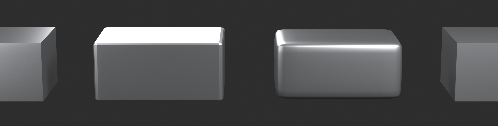
Phase 2: Panel Details (20 minutes)
📋 Surface Articulation
Step 1: Create main panel indent
- Tab to Edit Mode (face select mode)
- Select front face
- Inset (
I) → drag inward (about 0.15 units) - Press
Iagain → drag inward again (about 0.1 units) - Extrude (
E) → drag inward slightly (0.05 units) - Creates recessed panel effect
Step 2: Add corner reinforcements
- Loop Cut (
Ctrl+R) on front face- Add vertical and horizontal cuts
- Creates 9 faces on front (3x3 grid)
- Select corner faces (4 corners)
- Extrude (
E) out slightly (0.02 units) - Looks like reinforced corner plates
Step 3: Panel separation lines
- Create thin cube for panel line cutter:
Shift+A→ Mesh → Cube- Scale very thin:
SY0.02 - Scale wider:
SX2 - Position cutting through container horizontally
- Select container, add Boolean modifier:
- Operation: Difference
- Object: The thin cube cutter
- Solver: Exact
- Panel line appears across container
- Hide cutter (H) or move to separate collection
Step 4: Add detail bolts (Array + Boolean)
- Create small cylinder for bolt:
Shift+A→ Mesh → Cylinder- Vertices: 8 (low-poly, faster Boolean)
- Scale small:
S0.05 - Rotate:
RY90(point toward container) - Position on corner of panel
- Add Array modifier to bolt:
- Count: 3
- Relative Offset X: 0
- Relative Offset Y: 2.0
- Creates 3 bolts in a line
- Select container, add Boolean modifier:
- Operation: Difference
- Object: Bolt cylinder (cuts all arrayed copies)
- Bolt holes appear in row
- Adjust array count/spacing as desired
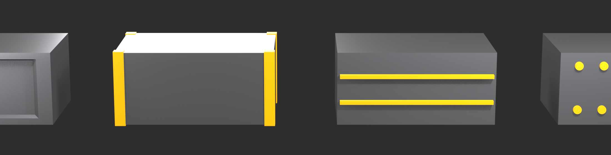
Phase 3: Functional Details (20 minutes)
🔧 Vents and Handles
Step 1: Vent grille pattern
- Create vent slat cutter:
- Add Cube
- Scale:
SZ0.05(thin horizontal slat) - Scale:
SX0.5(shorter width) - Position on side of container
- Add Array modifier to slat:
- Count: 5
- Relative Offset Z: 1.5 (spacing between slats)
- Container: Add Boolean → Difference → Slat object
- Vent grille cut into side
- Mirror reflects to other side automatically
Step 2: Handle recesses
- Create handle cutter:
- Add Cube
- Scale horizontally:
SX0.3 - Scale vertically:
SZ0.15 - Position on end face of container (centered)
- Container: Add Boolean → Difference → Handle cutter
- Creates recess for handle grip
- Appears on both ends (mirrored)
Step 3: Top hatch detail
- Tab to Edit Mode on container
- Select top face
- Inset (
I) → drag inward (0.1 units) - Inset again (
I) → smaller (0.05 units) - Extrude (
E) up slightly (0.02 units) - Creates raised hatch cover
- Can add bolt holes at corners (small cylinder Boolean)
Step 4: Warning labels area
- Create rectangle for label area:
- Edit Mode: Add plane
- Scale to label size
- Position on side of container
- Extrude in slightly (0.01 units)
- Or use Boolean with thin cube (difference)
- Creates recessed area for labels/decals
- (Actual text added in texturing later)
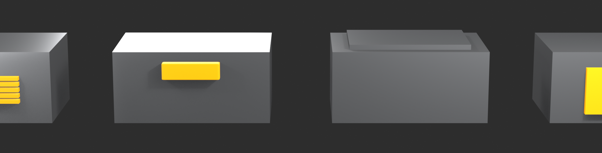
Phase 4: Edge Definition (10 minutes)
✨ Professional Polish
Step 1: Add Bevel modifier
- Ensure Boolean modifiers in place
- Add Modifier → Generate → Bevel
- Amount: 0.01-0.02
- Segments: 2
- Limit Method: Angle
- Angle: 30°
- Position AFTER Booleans, BEFORE Subdivision
- All sharp edges now have subtle bevels
- Catches light beautifully
Step 2: Check modifier stack order
- Proper order (top to bottom):
- Mirror
- Boolean(s)
- Bevel
- Subdivision Surface
- Drag to reorder if needed
- Each modifier feeds into next correctly
Step 3: Adjust subdivision levels
- If edges too soft: Add support loops in Edit Mode
- If too many polygons: Lower subdivision levels
- Balance between smoothness and performance
- Viewport: 1-2, Render: 2-3 typical
Step 4: Final topology check
- Tab to Edit Mode
- Enable Face Orientation (Viewport Overlays)
- All faces should be blue (correct normals)
- If red: Select →
Alt+N→ Recalculate Outside - Run Mesh → Clean Up → Merge by Distance
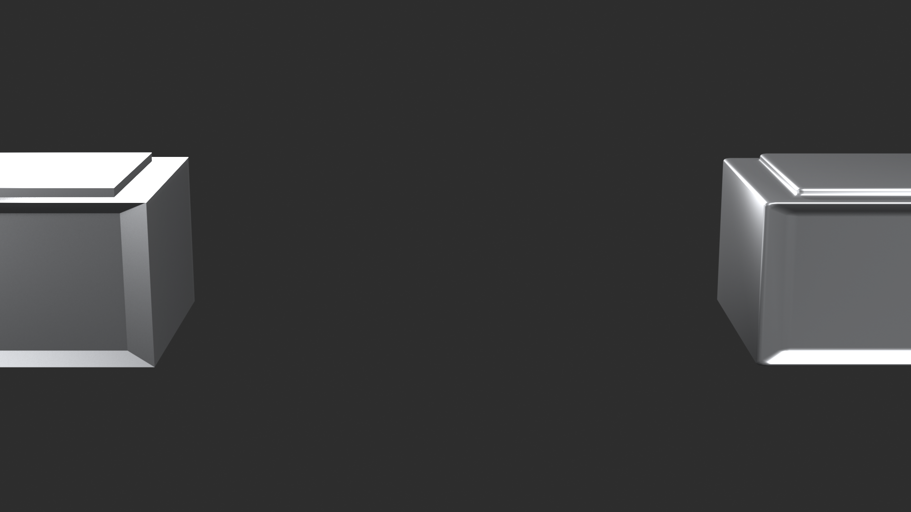
Phase 5: Optional Enhancements (15 minutes)
🎨 Taking It Further
Additional details to consider:
- Locking mechanism:
- Small cylinders for clasps
- Position on front of container
- Boolean or actual geometry
- Edge wear:
- Select corner edges
- Bevel manually (
Ctrl+B) - Slightly larger than auto-bevel
- Suggests use and wear
- Raised details:
- Extrude small sections outward
- Manufacturer logos, ID plates
- Surface interest
- Bottom details:
- Inset bottom face
- Create recessed base
- Add feet (small extrusions at corners)
Variation ideas:
- Change proportions (taller, wider, etc.)
- Different vent patterns
- More or fewer panels
- Corner reinforcements style
- Make your design unique
Success Criteria
✅ Professional Quality Checklist
Technical requirements:
- ✓ Clean quad topology maintained throughout
- ✓ Modifier stack properly ordered
- ✓ Mirror modifier working (both sides match)
- ✓ Booleans clean (no artifacts or errors)
- ✓ Subdivision Surface smooth (no pinching)
- ✓ All edges beveled (no razor-sharp edges)
- ✓ Normals facing correctly (blue in Face Orientation)
Design quality:
- ✓ Clear mechanical design (looks functional)
- ✓ Panel separation visible
- ✓ Surface details present (bolts, vents, etc.)
- ✓ Believable construction (could actually be manufactured)
- ✓ Good proportions and silhouette
- ✓ Professional finish (not amateur or messy)
Workflow demonstration:
- ✓ Non-destructive modifiers used (not all applied)
- ✓ Cutter objects organized (hidden or in collection)
- ✓ Scale applied to all objects
- ✓ Model centered at origin
- ✓ File organized and clean
⚠️ Common Project Issues
"Booleans creating artifacts"
- Apply scale to all objects (
Ctrl+A→ All Transforms) - Use Exact solver in Boolean modifier
- Ensure cutters fully penetrate base mesh
- Recalculate normals
"Mirror not working"
- Check object origin is centered
- Enable Clipping in Mirror modifier
- Correct axis selected (usually X)
- Mirror modifier before other modifiers in stack
"Subdivision making edges soft"
- Add support loops near edges (
Ctrl+R) - Or use Edge Crease (
Shift+E) - Bevel modifier before Subdivision helps
- May need more edge loops for sharpness
"Model looks too simple/boring"
- Add more Boolean cuts (panels, vents, details)
- Vary surface height (some areas extruded, some inset)
- Add small details (bolts, grills, labels)
- Reference real military/industrial containers
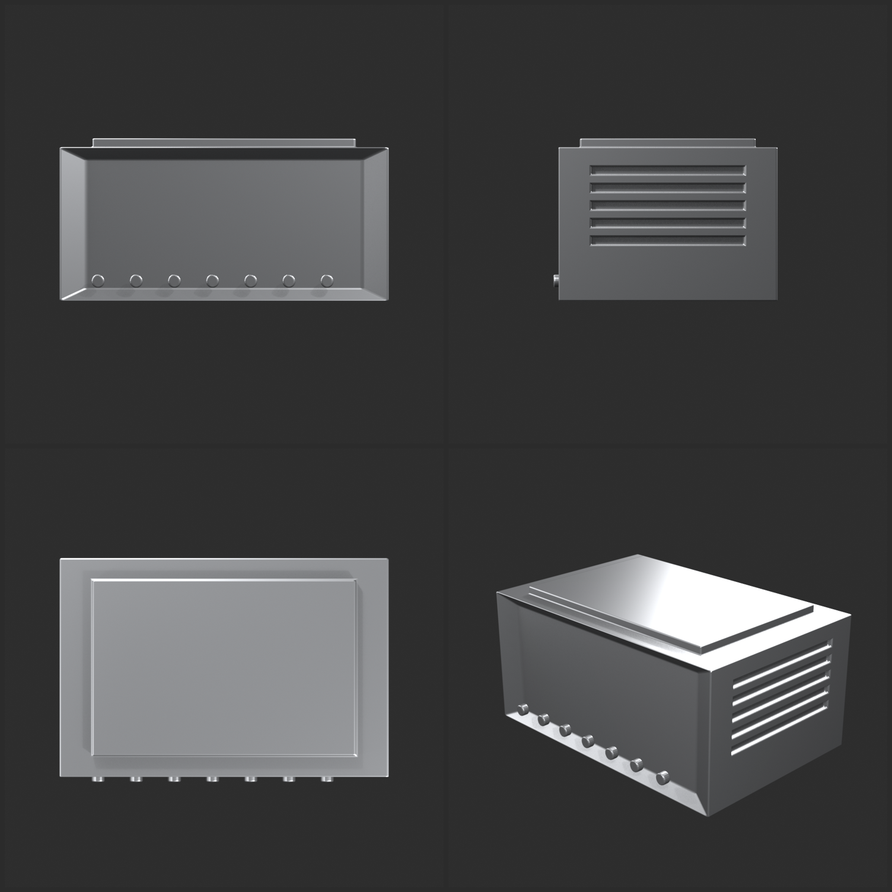
Next Steps
🚀 Beyond This Project
Immediate practice:
- Create variations of this container
- Different sizes, purposes (medical, ammunition, equipment)
- Experiment with different detail patterns
- Build a set of matching containers
Apply to other objects:
- Sci-fi weapon
- Drone or robot body
- Vehicle component
- Architectural element
- Same techniques, different application
Take it further:
- Add materials and textures
- Create wear and damage (sculpting)
- Light and render presentation
- Add to portfolio
💡 You Just Built Production-Ready Geometry: This container might seem simple—just a box with some details. But look at what you actually did: Clean quad topology. Non-destructive modifier stack. Boolean operations. Beveled edges. Proper subdivision. This isn't amateur work. This is production workflow. The same techniques professionals use for vehicles, weapons, robots, architectural visualization. The difference between you and them? They've done it thousands of times. You just did it once. Make ten more containers. Then make weapons. Then make vehicles. Same workflow. Different application. Each project builds your skills. Each iteration makes you faster. This project isn't the destination. It's proof you understand the fundamentals. Now build on that foundation.
🎯 Lesson Summary
You've completed your introduction to hard surface modeling in Blender. You've learned the techniques, tools, and workflows that professionals use to create mechanical objects, vehicles, weapons, and architectural elements. Let's review your accomplishments and chart your continued journey.
🎓 What You've Mastered
Core concepts:
- ✅ Hard surface modeling fundamentals (geometric precision, manufactured forms)
- ✅ When to use hard surface vs. organic modeling
- ✅ Non-destructive modifier workflow
- ✅ Clean topology and edge flow principles
- ✅ Professional hard surface aesthetic
Essential modifiers:
- ✅ Bevel modifier for professional edges
- ✅ Mirror modifier for perfect symmetry
- ✅ Array modifier for repeated elements
- ✅ Solidify modifier for panel thickness
- ✅ Subdivision Surface for smooth results
- ✅ Proper modifier stack ordering
Technical skills:
- ✅ Boolean operations (Union, Difference, Intersect)
- ✅ Quad topology maintenance
- ✅ Support geometry for subdivision control
- ✅ Precision tools (snapping, numeric input, measurement)
- ✅ Clean, production-ready workflows
Practical experience:
- ✅ Completed mechanical container project
- ✅ Applied full hard surface workflow
- ✅ Created professional-quality asset
Key Takeaways
💎 Essential Lessons
Hard surface is about intentionality:
- Every edge, panel, and detail serves a purpose
- Form follows function
- Believability comes from logical construction
- Even sci-fi needs internal consistency
Modifiers are your superpower:
- Non-destructive workflow allows infinite iteration
- Change your mind anytime without rebuilding
- Proper modifier order is crucial
- Professional standard for good reason
Topology matters more than you think:
- Clean quads = professional work
- Good edge flow = easy modification
- Support geometry = subdivision control
- This separates amateur from professional
Booleans are speed, not perfection:
- Fast for concepting and detail work
- Create messy topology (triangles)
- Use when speed matters or details are final
- Manual modeling when topology matters
Beveled edges make it professional:
- Sharp edges look CG and amateurish
- Bevels catch light and add realism
- Real manufactured objects always have bevels
- Small detail, huge impact
Precision when it matters, trust your eye when it doesn't:
- Use snapping and numeric input for accuracy
- But don't obsess over imperceptible differences
- Know when precision serves the model
- Know when it's just procrastination
Hard Surface vs. Organic Sculpting
🔄 Complementary Skills
You now know both approaches:
- Lesson 28 (Sculpting): Organic forms, freeform creation
- Lesson 29 (Hard Surface): Geometric forms, precision modeling
- Different tools for different jobs
- Professional artists use both
When to use which:
- Sculpt: Characters, creatures, natural objects, surface detail
- Hard Surface: Vehicles, weapons, architecture, mechanical objects
- Both: Robots, armored characters, weathered props
Combined workflow power:
- Model mechanical base with hard surface techniques
- Add wear, damage, organic details with sculpting
- Bake high-res detail to low-poly base
- Best of both worlds
Common Mistakes to Avoid
⚠️ Learn from These Pitfalls
Forgetting to apply scale:
- Scaled objects cause modifier errors
- Always
Ctrl+A→ All Transforms - Before adding modifiers or Booleans
Wrong modifier order:
- Subdivision before Bevel = bad results
- Boolean after Mirror = doesn't mirror
- Learn proper stack order
Ignoring topology:
- Random triangles everywhere
- Chaotic edge flow
- Subdivision artifacts
- Maintain quads during modeling
No edge bevels:
- Razor-sharp edges look CG
- Add Bevel modifier to every hard surface model
- Small bevels = huge realism boost
Overusing Booleans:
- Boolean everything = messy topology
- Can't modify or animate
- Use Booleans strategically
Perfectionism paralysis:
- Spending hours on invisible details
- Adjusting decimals endlessly
- Finish projects, move to next
Your Hard Surface Journey
🚀 Continuing Your Progress
Immediate practice (this week):
- Create 3 more container variations
- Different sizes and purposes
- Experiment with details
- Build confidence with workflow
- Model simple weapon or tool
- Futuristic gun, sci-fi tool
- Apply same techniques
- Different shapes, same workflow
- Focus on modifier fluency
- Get comfortable with modifier stack
- Practice proper ordering
- Understand each modifier deeply
Short-term goals (next month):
- Create 10-15 hard surface props
- Build mechanical assembly (multiple parts)
- Model vehicle or robot
- Learn advanced Boolean techniques
- Study real mechanical objects
- Develop personal hard surface style
Medium-term goals (3-6 months):
- Complete vehicle model (car, spaceship, etc.)
- Create weapon collection (5-10 pieces)
- Combine hard surface with sculpted details
- Learn retopology for clean animation meshes
- Build hard surface portfolio (10+ pieces)
- Master advanced techniques (curve-based modeling, CAD-style precision)
Advanced topics to explore:
- Architectural visualization
- Vehicle design and modeling
- Weapon and prop creation
- Robot and mech design
- Industrial and product design
- Game asset optimization
Resources and References
📚 Continue Learning
Blender-specific resources:
- HardOps/Boxcutter: Advanced hard surface add-ons (paid)
- Blender Guru: Hard surface tutorials on YouTube
- Josh Gambrell: Product and hard surface specialist
- Grant Abbitt: Hard surface game assets
Study real objects:
- Military equipment: Vehicles, weapons, containers
- Industrial machinery: Construction, manufacturing
- Consumer products: Electronics, appliances
- Architecture: Modern buildings, structures
- Understand how things are actually built
Concept art for inspiration:
- ArtStation: Professional concept art
- Vitaly Bulgarov: Mech and robot design master
- Feng Zhu: Vehicle and environment design
- Scott Robertson: "How to Draw" book (applies to 3D)
Communities for feedback:
- BlenderArtists.org
- Reddit r/blender
- Polycount (game art focused)
- ArtStation (portfolio and critique)
Where Hard Surface Fits in Your Blender Journey
🗺️ The Bigger Picture
You've now completed:
- ✅ Organic modeling (sculpting)
- ✅ Hard surface modeling
- Two fundamental 3D modeling approaches
These skills combine with previous lessons:
- Materials: Hard surface needs different materials than organic
- Lighting: Hard surfaces reflect light differently
- Texturing: Detail baking from high to low poly
- Everything works together
Upcoming lessons build on this:
- Lesson 30: Retopology: Clean up sculpts and Booleans
- Lesson 31: Advanced Modifiers: Push techniques further
- Character Creation: Combine organic and hard surface
- Each lesson adds capability
Final Thoughts
⚙️ You're a Hard Surface Modeler Now
You understand modifiers. You know Boolean operations. You maintain clean topology. You create precision geometry. You think like an engineer while creating like an artist.
Is your first hard surface model perfect? Probably not. The bevels might be inconsistent. The Booleans might have artifacts. The topology might have some triangles. That's expected. That's normal. That's the learning process.
What matters is you understand the workflow. You know the tools. You can look at a mechanical object and think "I can model that." You know how to break complex forms into simple operations. You understand non-destructive iteration.
Professional hard surface artists have modeled hundreds or thousands of objects. They've made every mistake you'll make. They've developed speed and intuition through volume. The difference between you and them? Mileage.
Your container is proof of concept. Proof you understand fundamentals. Now make weapons. Make vehicles. Make robots. Make props. Each project faster than the last. Each project cleaner. Each project more confident.
Hard surface modeling is engineering meets art. Form meets function. Precision meets creativity. And you now have the foundation to create anything mechanical, anything manufactured, anything that could exist in the physical world—or any world you imagine.
Welcome to hard surface modeling. Now go build something amazing.
💡 The Hard Surface Mindset: "Could this actually be built?" That's the question that separates good hard surface work from great hard surface work. Not "does it look cool" (though that matters). But "could it physically exist?" Are the panels in logical places? Would the fasteners actually hold? Do the vents serve a purpose? Does the construction make engineering sense? Even in complete fantasy—spaceships that violate physics, impossible mechanisms—the internal logic should hold. Because believability isn't about realism. It's about consistency. Your fictional world has rules. Follow them. Think like an engineer. Create like an artist. Question like a designer. That's the hard surface mindset. And once you develop it, you'll never see manufactured objects the same way again.